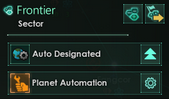

O grze
Stellaris to gra strategiczna czasu rzeczywistego z elementami 4X, stworzona przez Paradox Interactive. Gracz wciela się w rolę przywódcy galaktycznego imperium, rozwijając technologie, eksplorując kosmos, kolonizując planety i wchodząc w interakcje z obcymi rasami.

Antyporadnik: Jak skutecznie zniszczyć swoją ekonomię w Stellaris
Szczegółowe omówienie sposobów na kiepską gospodarkę przedstawiam w kolejnych punktach:
1. Aktywacja automatyzacji planet
Automatyzacja może wydawać się świetnym pomysłem, jeśli nie chcesz ręcznie zarządzać każdą planetą. Niestety, AI jest mistrzem tworzenia kolonii-potworków. Twoje planety będą rozwijać się wolno, budować losowe budynki, i zjadać więcej surowców niż produkują. Idealny sposób na subtelną katastrofę.
2. Budowanie wielu planet „Stolic”
Stolice są piękne, bo nie mają deficytów... ale też niczego nie produkują. Jeśli każda twoja planeta to stolica, to gratulacje – właśnie stworzyłeś najbardziej luksusową biedę w galaktyce. Twoi mieszkańcy są szczęśliwi, ale głodni.
3. Nie budowanie planet/habitatów pod technologię
Technologia to podstawa przetrwania, ale hej, kto potrzebuje badań? Jeśli chcesz wywołać gospodarczą zapaść i zostać galaktycznym zacofanym mocarstwem – zignoruj laboratoria. Twoje imperium będzie technologicznie na poziomie ryb.
4. Klikanie losowych eventów bez namysłu
Event wyskoczył? Nie czytaj! Kliknij to, co brzmi najbardziej dramatycznie. Albo to, co ma największy czerwony przycisk. Idealna metoda, by wplątać się w dziwaczne kryzysy, bunty lub stracić flotę za „mały bonus do wpływów”.